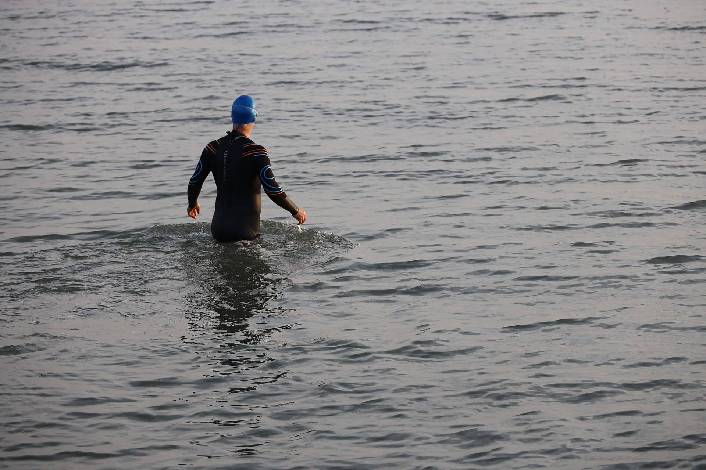

Every tide of 2027, port by port.
Tide and daylight for 214 UK ports, printed or as CSV.
A day of tide and daylight.
Two highs, two lows, and the light between them. Drag through the year.
Drawn from a simple model of the tide and the sun to show the parts of a page, not a forecast.

For anyone who plans by the water.
- Sailors
- High water and the last light, on one line.
- Swimmers
- Low water in daylight, found at a glance.
- Harbour masters
- Every port for the year, on one shelf.
The same tables, as one CSV.
For a spreadsheet, a chart plotter or your own app.
Buy the CSV, £12port,date,event,time,height_m
example-port,2027-04-05,low,01:20,0.9
example-port,2027-04-05,sunrise,06:42,
example-port,2027-04-05,high,07:32,4.9
example-port,2027-04-05,low,13:45,0.9
example-port,2027-04-05,sunset,19:42,
example-port,2027-04-05,high,19:58,4.9
example-port,2027-04-06,low,02:10,1.2- port
- The port the row belongs to
- date
- Every day of 2027
- event
- High, low, sunrise or sunset
- time
- Hours and minutes
- height_m
- Metres, for the tides
214 ports in one volume.
Every port and every day of 2027, bound as one book.

The book, or the data.
The same tables, in the form you work from.
| Detail | Print edition | CSV |
|---|---|---|
| Price | £28 | £12 |
| Covers | 214 ports, every day of 2027 | 214 ports, every day of 2027 |
| Form | A printed yearbook | One CSV file |
| For | The chart table and the shelf | A spreadsheet, a plotter, your own app |
| Ships | 2 December | 2 December |
| Order the bookOrder | Buy the CSVBuy |